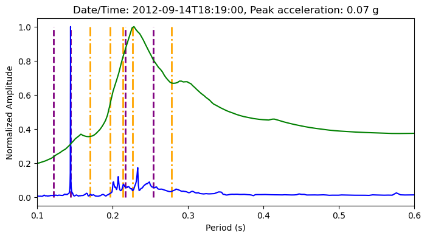

MIMO for Event History#
[1]:
import numpy as np
import mdof
import quakeio
from mdof import modal, transform
from mdof.utilities import Config, extract_channels, print_modes
Data inputs#
[2]:
# PAINTER RIO DELL TRANSVERSE (CASE 1)
station_id = 'CE89324'
chan_config_direction = 'Transverse'
[3]:
directory = f"uploads/{station_id}/"
pattern = "????????*.[zZ][iI][pP]"
from pathlib import Path
files = [file for file in Path(directory).glob(pattern)]
[4]:
from uploads.channel_conf import CHANNEL_CONF
chan_conf = CHANNEL_CONF[station_id][chan_config_direction]
chan_conf
[4]:
{'inputs': [3, 17, 20], 'outputs': [7, 9, 4]}
Method Inputs#
General Parameters#
parameter |
value |
|---|---|
|
number of output channels |
|
number of input channels |
|
number of timesteps |
|
timestep |
|
decimation (downsampling) factor |
|
model order (2 times number of DOF) |
Observer Kalman Identification (OKID)#
parameter |
value |
|---|---|
|
number of Markov parameters to compute (at most = nt) |
Eigensystem Realization Algorithm (ERA)#
parameter |
value |
|---|---|
|
number of observability parameters, or prediction horizon |
|
number of controllability parameters |
System Realization with Information Matrix (SRIM)#
parameter |
value |
|---|---|
|
number of steps used for identification, or prediction horizon |
Parameters for Mode Validation#
parameter |
value |
|---|---|
|
number of steps used for temporal consistency in EMAC |
[5]:
# Set Parameters
conf = Config()
conf.m = 500
conf.horizon = 190
conf.nc = 190
conf.order = 12
conf.a = 0
conf.b = 0
conf.l = 10
conf.g = 3
conf.period_band = (0.1,0.6)
conf.damping = 0.06
conf.pseudo = True
conf.outlook = 190
# conf.ss_decimation = 8
[6]:
event_modes = []
from matplotlib import pyplot as plt
methods = ["okid-era", "srim"]
lstyles = ["dashed", "dashdot", "dotted"]
colors = ["purple", "orange", "black"]
realizations = {}
summary_table = {}
for i, file in enumerate(files[:2]):
fig, ax = plt.subplots(figsize=(8,4))
print(file)
try:
event = quakeio.read(file, exclusions=["*filter*"])#, "*date*"])
peak_accel = np.abs(event['peak_accel']*0.0010197162129779)
event_date = event['event_date']
print("peak acceleration (cm/s/s):", peak_accel)
print("event date/time:", event_date)
inputs, dt = extract_channels(event, chan_conf['inputs'])
outpts, dt = extract_channels(event, chan_conf['outputs'])
summary_table[event_date] = {"peak acc": np.round((peak_accel),3)}
for method in methods:
realizations[method] = mdof.system(method=method, inputs=inputs, outputs=outpts, threads=8, chunk=200, **conf)
except Exception as e:
print(e)
print(">>>>> Not read: ", file.name)
continue
for j,method in enumerate(methods):
print(method)
ss_modes = modal.system_modes(realizations[method],dt,**conf)
ss_periods = [1/value["freq"] for value in ss_modes.values() if value["energy_condensed_emaco"]>0.5 and value["mpc"]>0.5]
ax.vlines(ss_periods, 0, 1, linestyles=lstyles[j], color=colors[j], linewidth=2, label=f"{method.upper()}")# if i==0 else None)
summary_table[event_date][method] = np.round(np.max(ss_periods),3) if len(ss_periods)>0 else np.nan
print_modes(ss_modes)
periods, amplitudes = transform.fourier_transfer(inputs=inputs[0], outputs=outpts[0], step=dt, **conf)
amplitudes = amplitudes/max(amplitudes)
summary_table[event_date]['FSTF'] = np.round(modal.spectrum_modes(periods, amplitudes, prominence=0.1)[0][0],3)
ax.plot(periods, amplitudes, label="FSTF", color="blue")
periods, amplitudes = transform.response_transfer(inputs=inputs[0], outputs=outpts[0], step=dt, periods=periods, threads=8, **conf)
amplitudes = amplitudes/max(amplitudes)
summary_table[event_date]['RSTF'] = np.round(modal.spectrum_modes(periods, amplitudes, prominence=0.1)[0][0],3) if len(modal.spectrum_modes(periods, amplitudes)[0]) > 0 else np.nan
ax.plot(periods, amplitudes, label="RSTF", color="green")
ax.set_xlim(conf.period_band)
ax.set_title(f"Date/Time: {event_date}, Peak acceleration: {np.round(peak_accel,2)} g")
ax.set_xlabel("Period (s)")
ax.set_ylabel("Normalized Amplitude")
if i==1:
ax.legend(loc='upper right', frameon=True, framealpha=0.5)
uploads/CE89324/RioDell_14Sep2012_71842255_ce89324p.zip
peak acceleration (cm/s/s): 0.07422310371023538
event date/time: 2012-09-14T18:19:00
okid-era
Spectral quantities:
T(s) ζ EMACO MPC EMACO*MPC
0.2884 -0.0222 1.0 0.2057 0.2057
0.2535 -0.07056 1.0 0.9278 0.9278
0.2169 0.02866 1.0 0.8527 0.8527
0.1441 0.02229 1.0 0.7275 0.7275
0.1211 -0.006544 1.0 0.9409 0.9409
0.1042 -0.006533 1.0 0.4507 0.4507
Mean Period(s): 0.188027027684772
Standard Dev(s): 0.06908592345454602
srim
Spectral quantities:
T(s) ζ EMACO MPC EMACO*MPC
0.2778 0.0308 1.0 0.9286 0.9286
0.2615 0.04845 1.0 0.365 0.365
0.2265 0.01969 1.0 0.966 0.966
0.2134 0.03212 1.0 0.9523 0.9523
0.1966 0.008895 1.0 0.9523 0.9523
0.17 0.03472 1.0 0.5898 0.5898
Mean Period(s): 0.22428764024351658
Standard Dev(s): 0.03670161181150719
uploads/CE89324/nc73821046_ce89324p.zip
peak acceleration (cm/s/s): 0.14265523904696928
event date/time: 2022-12-20T10:38:00
okid-era
Spectral quantities:
T(s) ζ EMACO MPC EMACO*MPC
0.2816 -0.05093 1.0 0.9179 0.9179
0.181 -0.05539 1.0 0.694 0.694
0.02675 -0.00584 1.0 0.7033 0.7033
0.02363 0.0003521 1.0 0.9577 0.9577
0.02256 -0.00673 1.0 0.8654 0.8654
0.0208 -0.008142 1.0 0.9159 0.9159
Mean Period(s): 0.09272418590637212
Standard Dev(s): 0.10222028855682465
srim
Spectral quantities:
T(s) ζ EMACO MPC EMACO*MPC
0.2839 -0.01308 1.0 0.9796 0.9796
0.2498 0.0452 1.0 0.9634 0.9634
0.2384 0.03007 1.0 0.9892 0.9892
0.2126 0.0175 1.0 0.9258 0.9258
0.1829 0.05683 1.0 0.9702 0.9702
0.1696 -0.01089 1.0 0.5775 0.5775
Mean Period(s): 0.22285865543545277
Standard Dev(s): 0.0392186967505266


[7]:
import pandas as pd
pd.DataFrame(summary_table).T
[7]:
| peak acc | okid-era | srim | FSTF | RSTF | |
|---|---|---|---|---|---|
| 2012-09-14T18:19:00 | 0.074 | 0.253 | 0.278 | 0.233 | 0.228 |
| 2022-12-20T10:38:00 | 0.143 | 0.282 | 0.284 | 0.445 | 0.314 |
[ ]: